no photo

채소볼#57 · 베이스bowl
no photo

메밀면볼#61 · 베이스noodle
no photo
파스타볼#66 · 베이스pasta
no photo

양송이크림스프#70 · 사이드soup

단호박크림스프#75 · 사이드soup
no photo

포테이토크림스프#77 · 사이드soup


치킨토마토스튜#83 · 사이드chicken
no photo

카사바칩#88 · 사이드chips
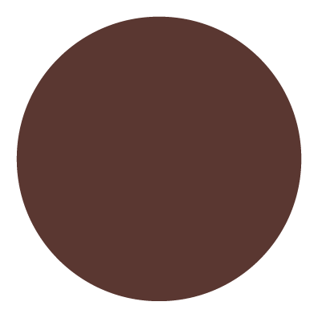
오리엔탈#89 · 드레싱bottle
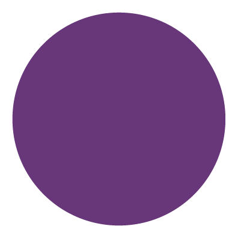

(저당) 발사믹#95 · 드레싱bottle
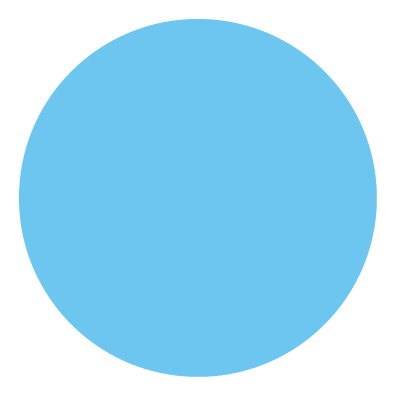

(저당) 랜치#96 · 드레싱bottle
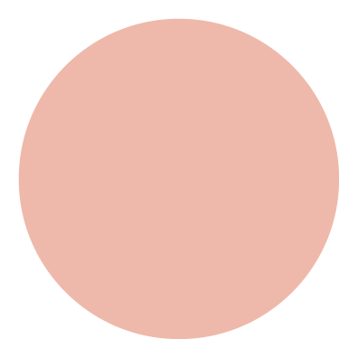

크리미칠리#105 · 드레싱bottle
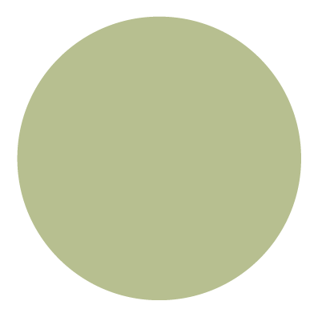

크리미할라피뇨#108 · 드레싱bottle
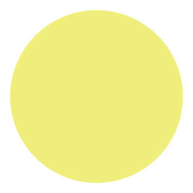

(저당) 레몬허브#110 · 드레싱bottle
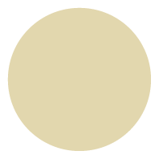

(저당) 참깨소이#111 · 드레싱bottle
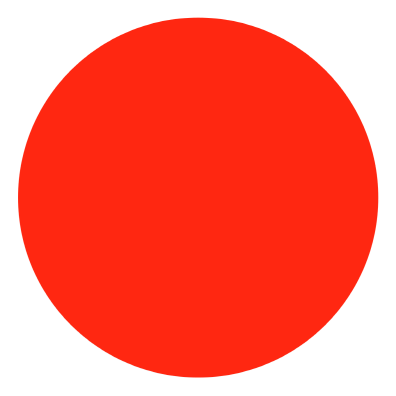

(저당) 스리라차소이#115 · 드레싱bottle
no photo

아메리카노#118 · 음료seed
no photo
그린밀싹#119 · 음료leaf
no photo

오렌지당근#120 · 음료carrot
no photo

레드클렌즈#121 · 음료seed
no photo
코크제로#122 · 음료seed
no photo
스프라이트제로#123 · 음료soup
no photo

애사비사과스파클링#124 · 음료seed
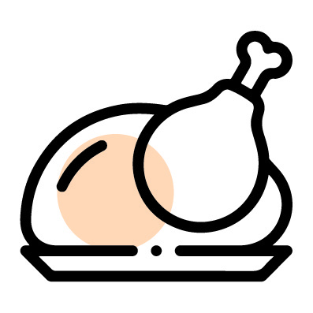
닭가슴살#125 · 단백질chicken
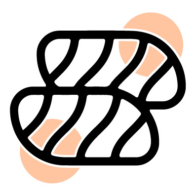

그라브락스연어#127 · 단백질fish

로스트닭다리살#128 · 단백질chicken
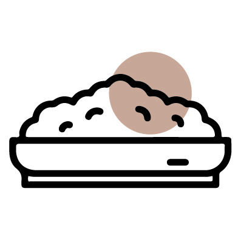

그라운드비프#134 · 단백질beef
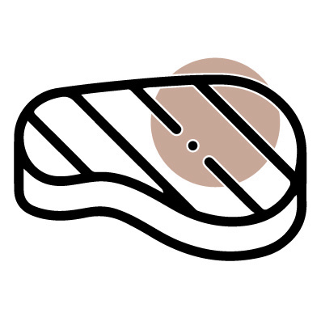
우삼겹#138 · 단백질beef
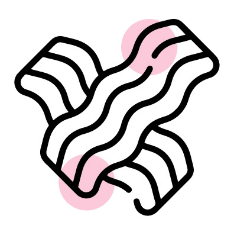

베이컨#143 · 단백질bacon
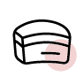

로스트삼겹#146 · 단백질pork
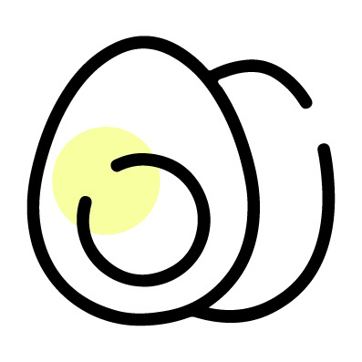

에그#149 · 단백질egg
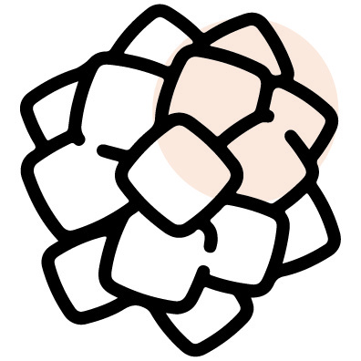
두부#151 · 단백질tofu
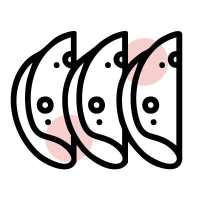

잠봉슬라이스#153 · 단백질ham
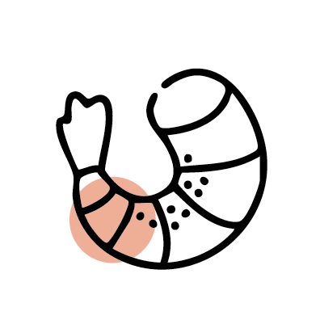

케이준쉬림프#155 · 단백질shrimp
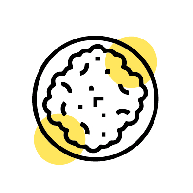

스크램블에그#159 · 단백질egg

할라피뇨#165 · 채소pepper
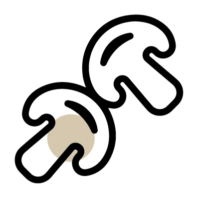
머쉬룸#166 · 채소mushroom
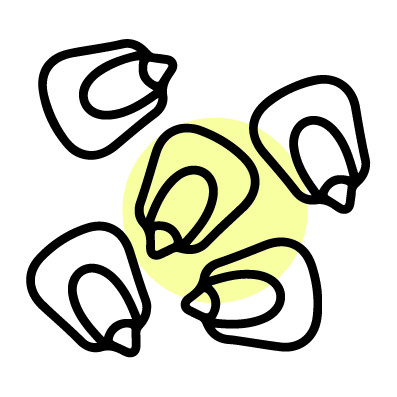

옥수수#168 · 채소corn
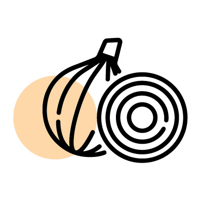

양파#169 · 채소onion
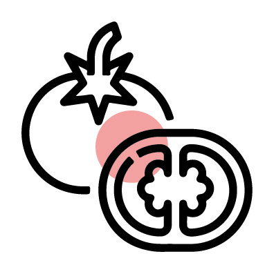

토마토#170 · 채소tomato
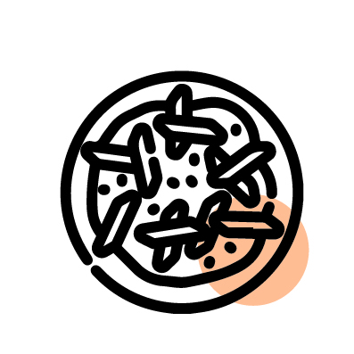
당근라페#172 · 채소carrot

적채#174 · 채소cabbage

드라이토마토#175 · 채소tomato
no photo

파인애플#178 · 채소leaf
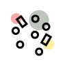

후리가케#179 · 사이드flake
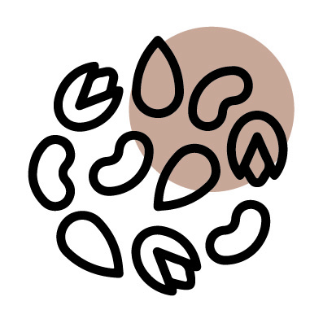

견과류#182 · 사이드nuts
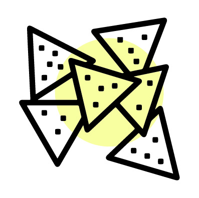
나쵸칩#184 · 사이드chips
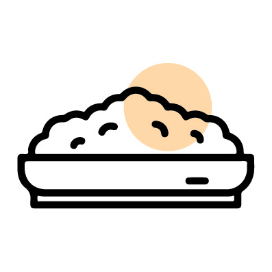
양파플레이크#186 · 사이드flake
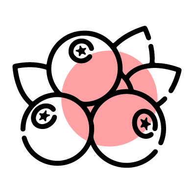
크랜베리#188 · 사이드berry
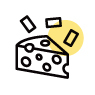

슈레드치즈#189 · 사이드cheese
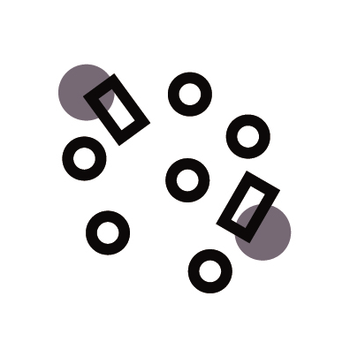
김자반#191 · 사이드seaweed
no photo
몬테레이치즈#193 · 사이드cheese

스윗포테이토#199 · 드레싱bottle


단호박#204 · 드레싱bottle
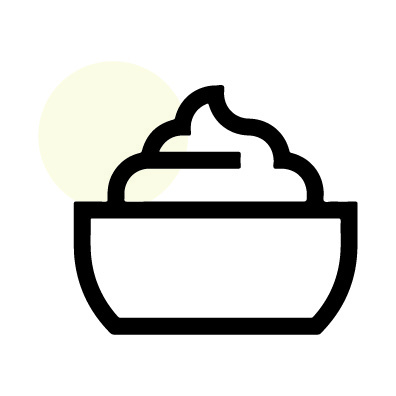

사워크림#205 · 드레싱bottle
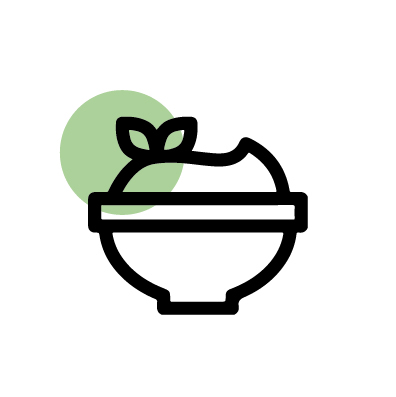

바질페스토#208 · 드레싱bottle
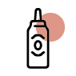

바베큐소스#210 · 드레싱bottle
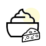

화이트치즈소스#215 · 드레싱cheese
no photo

(저당) 들기름소이#219 · 드레싱bottle
no photo

고추간장 소스#222 · 드레싱bottle
no photo

시저#223 · 드레싱bottle
no photo

허니머스타드#228 · 드레싱bottle
no photo

채소#367 · 베이스bowl


화이트치즈#377 · 채소cheese
no photo
곡물, 채소#771 · 베이스bowl
no photo

메밀면, 채소#1571 · 베이스noodle
no photo

곡물 (*채소믹스 미포함)#1836 · 베이스leaf
no photo

데리야끼소스#1845 · 채소bottle
no photo

시저 드레싱#1848 · 채소bottle
no photo

참기름#1851 · 채소leaf

잠봉#2118 · 채소ham
no photo
파스타면, 채소#3251 · 베이스noodle
no photo

곡물(1.5배), 채소#3666 · 베이스bowl


로스트닭다리살x3#3669 · 채소chicken
no photo

바질 파스타면(2배), 채소#3796 · 베이스noodle


닭가슴살x3#3799 · 채소chicken


우삼겹x3#3929 · 채소beef
no photo

*채소 미포함#4319 · 베이스leaf
no photo

곡물#6278 · 베이스bowl
no photo

(*채소믹스 미포함#6290 · 채소leaf
no photo

드레싱 미제공)#6293 · 채소bottle
no photo

통밀 치아바타#6813 · 베이스bread
no photo

화이트치즈 (*채소믹스 미포함)#6821 · 채소cheese
no photo

채소믹스#6927 · 채소leaf
no photo

참기름 (*채소믹스 미포함#9419 · 채소leaf
no photo

곡물밥x1.5#9815 · 채소rice